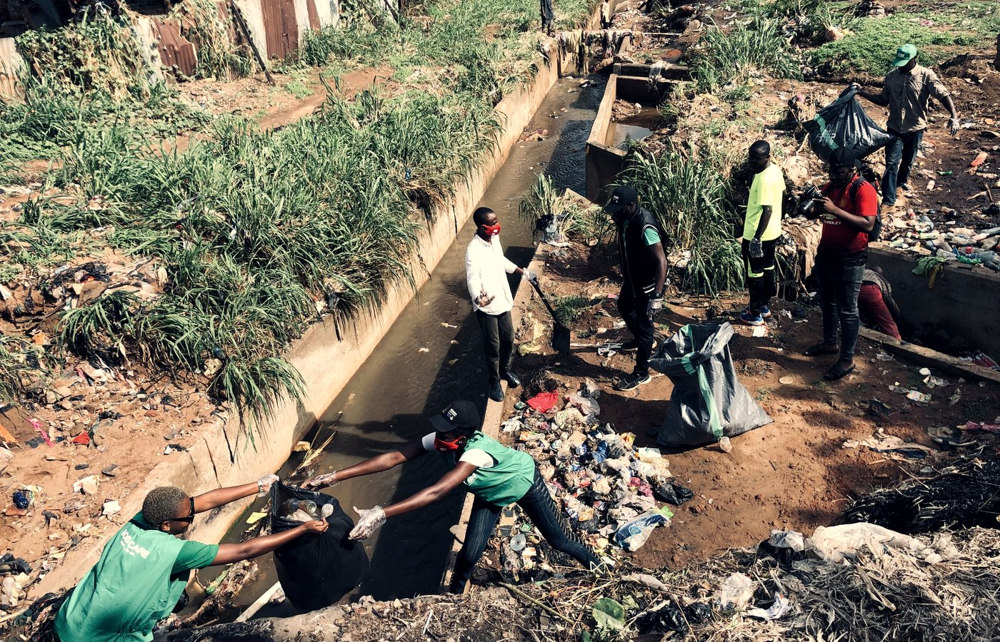
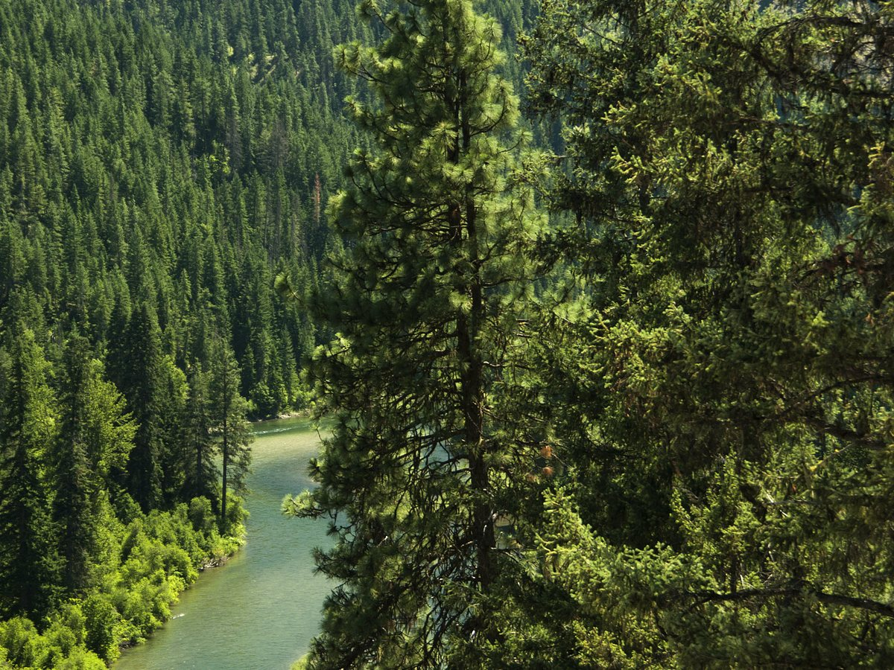

What to Bring
Bring a water bottle, comfortable clothing, and any required permission forms. Event-specific packing lists will be shared with registered families.
Gather · Celebrate · Serve
Join us for camps, worship, creative nights, family gatherings, and service opportunities throughout the year.
Season Schedule
This schedule gives families and volunteers a quick view of upcoming gatherings. Details may be updated as each date approaches.
| Event | Date & Time | Location | Who Can Attend |
|---|---|---|---|
| Summer Leadership Camp | July 15–18, 9:00 AM | Camp Yakama | Grades 7–12 |
| Youth Worship Night | August 6, 6:30 PM | Community Church | Youth and families |
| Community Clean-Up Day | August 21, 9:00 AM | White Swan Park | All ages |
| Creative Storytelling Workshop | September 12, 4:00 PM | Youth Center | Grades 6–12 |
What Our Gatherings Feel Like



Bring a water bottle, comfortable clothing, and any required permission forms. Event-specific packing lists will be shared with registered families.
Limited transportation may be available from central pickup locations. Contact the team early so we can help coordinate.
Adults can help with setup, meals, driving, prayer, photography, or activity stations.
Volunteer with us →